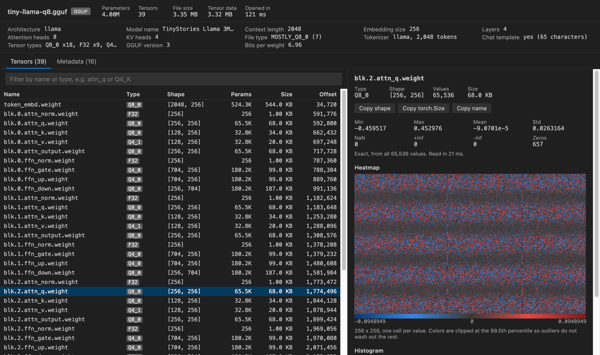

GGUF, Safetensors & NPY Tensor Viewer
GGUF, Safetensors & NPY Tensor Viewer, a VS Code extension by Zovo
Click a .gguf, .safetensors, .npy or .npz file and see every tensor's name, dtype and shape, plus stats and a heatmap, without Python and without loading the whole file.
Free, MIT license. Needs VS Code 1.90.0 or newer. Extension ID zovo.tensor-viewer, version 0.1.2.

Real output. The file is a 3.35 MB llama-style GGUF written by gguf-py from scripts/make-fixtures.py. The extension's own webview bundle rendered it in headless Chrome, fed with messages from the extension's GGUF reader. The header took 121 ms to read and the tensor 21 ms.
- It opens big checkpoints in well under a second. Only the header is read at first. When you click a tensor, Tensor Viewer reads that tensor's bytes by offset, and a huge one is sampled by whole rows spread across it. Our test opens a 10.7 GB safetensors file in under 1 s.
- It reads the formats local LLM users actually have. GGUF metadata (architecture, context length, file type, tokenizer, chat template) sits next to the quant type of each tensor. Q8_0, Q4_0, Q4_1, Q5_0, Q5_1, Q4_K, Q5_K and Q6_K weights are decoded for stats and heatmaps.
- It's safe to open files you downloaded. Nothing in the file is ever run. Pickled object arrays in
.npyand.npzare listed and refused, and the viewer makes no network calls at all.
Quick start
- Install Tensor Viewer.
- Click any
.gguf,.safetensors,.npyor.npzfile in the Explorer. Then click a tensor in the table.
Run "Tensor Viewer: Get Started" from the Command Palette for a short tour.
Questions people ask
Is GGUF, Safetensors & NPY Tensor Viewer free?
Yes. GGUF, Safetensors & NPY Tensor Viewer is free and MIT licensed.
How do I install GGUF, Safetensors & NPY Tensor Viewer?
Click "Install in VS Code" above, or search for zovo.tensor-viewer in the Extensions view.
What you see
The top bar shows the total parameter count, the number of tensors, the file size and how long the header took. GGUF files add a summary row with the architecture, model name, context length, embedding size, layers, heads, file type, tokenizer size and bits per weight.
The tensor table lists name, type, shape, parameter count, size in bytes and byte offset. Type in the filter box to match names (attn_q, blk.3.) or an exact type (Q4_K, float16). Click a header to sort. Up and down arrows move through the list. Tables with thousands of tensors show 500 rows at a time.
Click a tensor and the right panel shows min, max, mean, std, NaN, +Inf, -Inf and zero counts. 2-D tensors get a heatmap. 1-D tensors get a line plot with a min and max band, and an HxWx3 uint8 array shows as a picture. A histogram comes last. Hover over any of them to read exact values. "Copy shape" puts (4096, 11008) on the clipboard, and "Copy torch.Size" gives torch.Size([4096, 11008]).

The heatmap uses blue for negative values and red for positive ones, with gray at zero. Data that's never negative uses a single blue ramp instead. Colors are clipped at the 99.5th percentile so a few outlier weights don't flatten everything else, and the caption says when that happened.


Supported files
| Format | What is read | Types decoded for stats |
|---|---|---|
.npy | header v1, v2 and v3, C and Fortran order, either byte order | bool, int8 to int64, uint8 to uint64, float16/32/64, complex (as magnitude), datetime as raw ticks |
.npz | zip directory, stored and deflated entries, zip64 | same as .npy |
.safetensors | JSON header and __metadata__ | BOOL, U8, I8, I16, U16, I32, U32, I64, U64, F16, BF16, F32, F64, F8_E4M3, F8_E5M2 |
.gguf | v1 to v3 metadata and tensor info, through @huggingface/gguf | F32, F16, BF16, F64, I8 to I64, Q8_0, Q4_0, Q4_1, Q5_0, Q5_1, Q4_K, Q5_K, Q6_K |
Other GGUF types (Q2_K, Q3_K, IQ types, TQ, MXFP4) are listed with the right size and offset, but have no stats yet. Text, structured and object arrays in NumPy files are listed without stats.
The GGUF shapes are shown in row-major order, the way PyTorch prints them. GGUF itself stores the dimensions fastest-first, so [4096, 32000] in llama.cpp logs is [32000, 4096] here.
How big files stay fast
Tensor Viewer never reads a whole file. The .npy and safetensors headers are a few hundred bytes to a few MB, and GGUF metadata is read in 2 MB steps until the tensor list ends. For one tensor it reads at most tensorViewer.sampleValues values (2,000,000 by default). When a tensor is bigger, it reads up to 512 runs of whole rows spread evenly from the first row to the last, so the heatmap covers the full tensor. The panel always says whether the stats are exact or from a sample, and how many values went in.
Deflated .npz entries can't be read at an offset. For those, the header comes from inflating just the start of the entry, and big arrays are sampled from their first rows.
| Setting | Default | What it does |
|---|---|---|
tensorViewer.sampleValues | 2,000,000 | Most values read from one tensor for stats and plots |
tensorViewer.maxRemoteFileMB | 512 | Files not on local disk are read whole, up to this size |
tensorViewer.askForRating | true | Ask one time for a Marketplace rating, after 5 files and 2 days. Turn it off with false |
Privacy and safety
There's no telemetry and no network access. The webview runs under a strict Content-Security-Policy with no remote scripts, and every name and metadata string is drawn as text, never as HTML. Python pickle is never loaded, so .pt, .pth, .pkl and object arrays inside .npy files stay closed. Tensor Viewer is read-only and doesn't change your files.
Limits
GGUF files split into shards show the tensors of the open shard only, with a note. Heatmaps show at most 256 by 256 cells, each the mean of its block of values. Tensors with three or more dimensions are drawn with the leading dimensions flattened into rows.
License
MIT. Bundled libraries are listed in THIRD-PARTY-NOTICES.md (@huggingface/gguf, @huggingface/tasks and fflate, all MIT).
More viewers by Zovo
- Context Drift finds stale facts in AGENTS.md, CLAUDE.md and other agent rule files.
- PDF Viewer & Reader with Dark Mode reads PDFs with a dark mode, search, an outline and thumbnails.
- CSV, Excel & Parquet Viewer opens Parquet, Excel and CSV files as a sortable, filterable table.
- DOCX Viewer & Word Viewer previews Word files with dark mode, an outline and search.
- HDF5 & NetCDF Explorer browses groups, variables and attributes in scientific data files.
- PPTX Viewer for PowerPoint shows PowerPoint slides, thumbnails and speaker notes.
- Skill Shelf lists, checks and toggles the Agent Skills that Claude Code, Codex and Cursor load.
Install GGUF, Safetensors & NPY Tensor Viewer
Click the button to open VS Code and install it, or press Ctrl+P (Cmd+P on macOS) in VS Code and run ext install zovo.tensor-viewer.
Free, MIT license. Needs VS Code 1.90.0 or newer. Extension ID zovo.tensor-viewer, version 0.1.2.
Source code and issues are on GitHub.